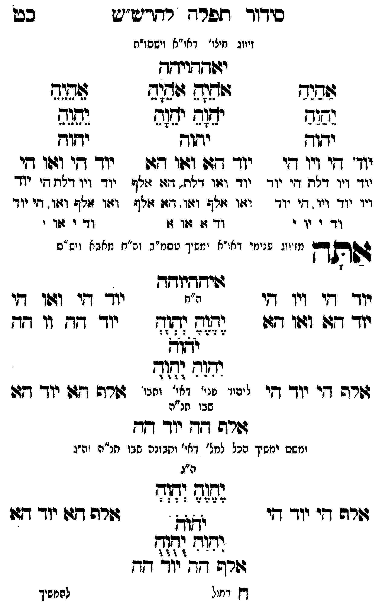

Neue Klartextfassung
[זיווג חיצו' דאו"א וישסו"ת] יאההויהה === טבלה === [טור ימין] אַהַיַהַ יַהַוַהַ יהוה יוד הי ויו הי יוד ויו דלת, הי יוד ויו יוד ויו, הי יוד וד י וי י [טור אמצעי] אָהָיָהָ אָהָיָהָ יָהָוָהָ יָהָוָהָ יהוה יוד הא ואו הא יוד ואו דלת, הא אלף ואו אלף ואו, הא אלף וד א או א [טור שמאל] אֵהֵיֵהֵ יֵהֵוֵהֵ יהוה יוד הי ואו הי יוד ויו דלת, הי יוד ואו אלף ואו, הי יוד וד י או י === סוף טבלה === אתה [מזיווג פנימי דאו"א ימשך עסמ"ב ונרנח"י דחכמה ויש"ס] איההיוהה === טבלה === [טור ימין] יוד הי ויו הי יוד הא ואו הא אלף הי יוד הי [טור אמצעי] [ה"ח] יֶהֶוֶהֶ יְהְוְהְ יֹהֹוֹהֹ יִהִוִהִ יֻהֻוֻהֻ [ליסוד פני' דאי' ותבו' שבו חו"ח] [טור שמאל] יוד הי ואו הי יוד הה וו הה אלף הא יוד הא === סוף טבלה === אלף הה יוד הה [ומשם ימשך הכל למל' דאי' ותבונה שבו חו"ח וה"ג]
Original gegen neue OCR · Niqqud für Vergleich ausgeblendet
Original
[זיווגK062-001 חיצו' דאו"א וישסו"ת] יאההויהה === טבלה === [טור ימין] אהיה יהוה יהוה יוד הי ויו היK062-002 יוד ויו דלת, היK062-003 יוד ויו ∅K062-004 יוד ויו, היK062-005 יוד וד י ויK062-006 י [טור אמצעי] אהיה אהיה יהוה יהוה יהוה יוד הא ואו הא יוד ואו דלת, הא אלף ואו אלף ואו, הא אלףK062-007 וד א או א [טור שמאל] אהיה יהוה יהוה יוד הי ואו הי יוד ויו דלת, הי יוד ואו אלף ואו, הי יודK062-008 וד י אוK062-009 י === סוף טבלה === אתה [מזיווגK062-010 פנימי דאו"א ימשך עסמ"ב ונרנח"י דחכמה ויש"ס] איההיוהה === טבלה === [טור ימין] יוד הי ויו הי יוד הא ואו הא אלף הי יוד הי [טור אמצעי] [ה"ח] יהוה יהוה יהוה יהוה יהוה [ליסודK062-011 פני' דאי' ותבו'K062-012 שבו חו"ח] [טור שמאל] יוד הי ואו הי יוד הה וו הה אלף הא יוד הא === סוף טבלה === אלף הה יוד הה [ומשם ימשךK062-013 הכל למל'K062-014 דאי' ותבונה שבו חו"ח וה"ג]K062-015
OCR · fehlbar
סידוך תפר- רדריט"יש כס זיווגK062-001 חיצו' דאי"א וישסו"ת יזדדגדוידד שבדד ושחק שדב(2 שגנד נשוב יש יב (ח גשגז9 יזוק יחוק וקוץ יוך' דזי ויך -דץי ידדך דגגו וגוו 7-ו ידךך דקי ו104ו דקיK062-002 יוד ויו דנח די יוד יוד וזזו דלת. דצו זולףK062-003 יוד ויו דלת די יוך ויוK062-004 יוד ויו. די יוד וזו מזלש וזו. דז: צלף וצו זולף וצוו. דיK062-005 יוד וד י יוK062-006 י ∅K062-007 וד זו זזו ז:K062-008 וד י וK062-009 י י ימזי דא ("א י מש י 4 ה' וש ') גותח מזיווגK062-010 פנימי ד משיך טסמז"ב וה"ח מאבא (יש"ם גויחךיושדך יוך דקי דיך דבי ה"ח יוךך דזי 141 אי יודך 727 171 דגד ללד (דוזד יוך דז וו ד[- אודך יחר וחיך זרה דקי י(ך- קי ליפיוK062-011 פני' וא' וחבו' ורה דגד יי- חשK062-012 שבו חנ"ה גשרפ ד[- יך דק וזחם ימשיךK062-013 הכל לחל'K062-014 דאי' ותבונה שבו תנ"ה וה"ג ה"ג ו ו ד - - - ו דשרה די יוך- ך לאל דשרה דקגו יו- דזו לשלל גורס דדן יוד- -דךן דץ דיחול להמשיךK062-015